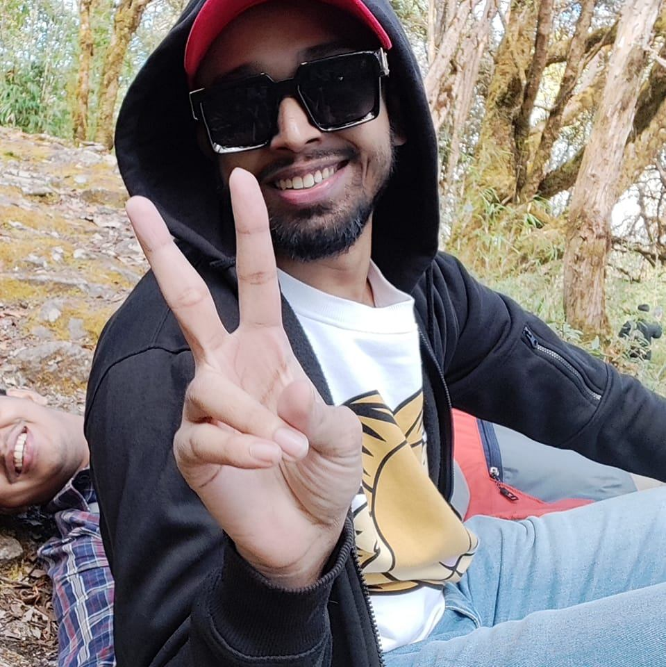

Sk Saif Ali
Contact me

Summary
I am a hard-working Artist in Visual Effects Industry with over 5 years of experience. Want to
work in an environment which encourages me to succeed and grow
professionally where I can utilise my skills and knowledge
appropriately.I'm currently following and learning Web development.
Education
- Diploma in Vfx Weafx Media and Design School
- Higher secondary education Pandua Sasibhusan Saha High school
Work Experience
- Junior Roto Artist at Pixstone Images Pvt Ltd (2019-1021)
- Mid Roto Artist at MPC Film (2021-2023)
- Mid Roto Artist at Outpost VFX (2023-present)
Skills
- HTML
- CSS
- React.JS
- VFX Rotoscoping: Proficient in creating accurate and detailed rotoscope mattes for complex shots.
- SilhouetteFX (or other specific software): Expertise in using industry-standard rotoscoping software to deliver high-quality results.
- Edge Refinement: Skilled in refining edges and managing motion blur for seamless integration
- Tracking: Proficient in using 2D and 3D tracking techniques to ensure accurate rotoscoping on moving objects.
- Motion-blur
- Problem solving
- Effective communication and collaboration.